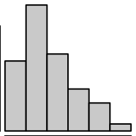
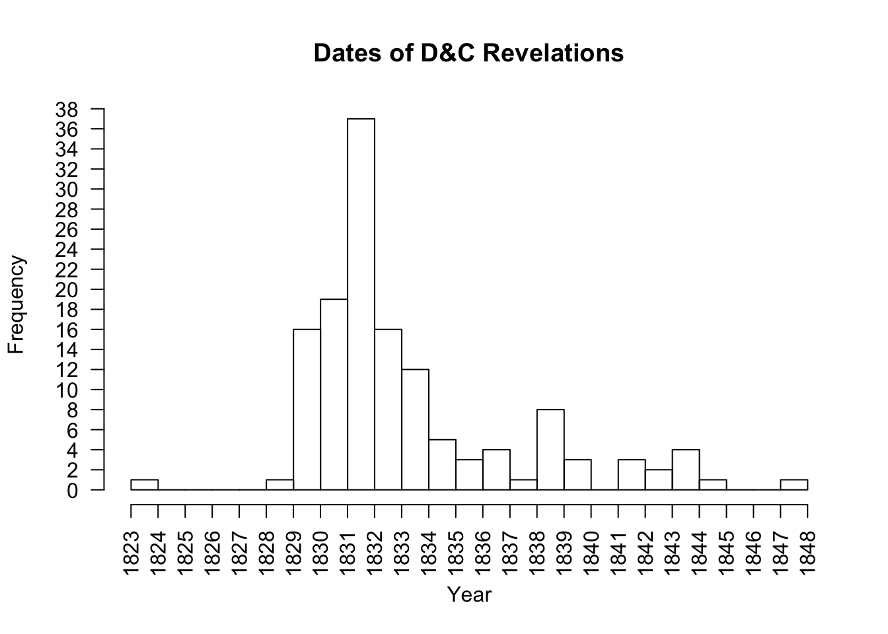
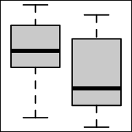
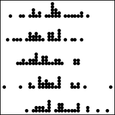
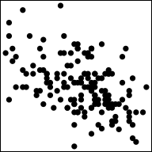
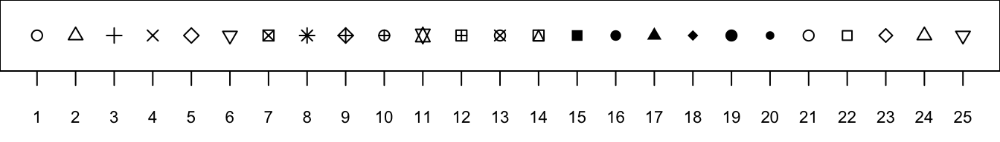
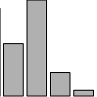
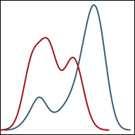

There are many ways to display data. The fundamental idea is that the graphical depiction of data should communicate the truth the data has to offer about the situation of interest.

1 Quantitative Variable
Great for showing the distribution of data for a single quantitative variable when the sample size is large. Dotplots are a good alternative for smaller sample sizes. Gives a good feel for the mean and standard deviation of the data.
To make a histogram in R use the function:
hist(object)
object must be quantitative data. R refers to this as a “numeric vector.”Example Code
Hover your mouse over the example codes to learn more.
hist An R function “hist” used to create a histogram. ( Parenthesis to begin the function. Must touch the last letter of the function. airquality “airquality” is a dataset. Type “View(airquality)” in R to see it. $ The $ allows us to access any variable from the airquality dataset. Temp “Temp” is a quantitative variable (numeric vector) from the “airquality” dataset. )
Closing parenthsis for the hist function.
Press Enter to run the code. … Click to View Output.
hist(airquality$Temp This part was explained in the first example code. , The comma allows us to specify optional commands to the “hist” function. The space after the comma is not required. It just looks nice. xlab=“Temperature” xlab= stands for “x label.” Use it to specify the text to print on the plot under the x-axis. The desired text must always be in quotations. , A comma must always be used to separate additional commands. main=“La Guardia Aiport Daily Temperatures” main= lets us specify the “main” title to be placed above the plot. The desired text must always be placed in quotations. ) Functions must always end with a closing parenthesis.
Press Enter to run the code. … Click to View Output.
hist(airquality$Temp, This code was explained in the first example code. col=“skyblue” col= allows us to specify the color of the plot using a named color. The name of the color must be placed in quotations. Type “colors()” in R to see color options. ) Functions always end with a closing parenthesis.
Press Enter to run the code. … Click to View Output.
Histograms group data that are close to each other into “bins” (the vertical bars in the plot). The height of a bin is determined by the number of data points that are contained within the bin. For example, if we group together all the sections of the book of scripture known as the Doctrine and Covenants that occurred in a given year (Jan. 1st - Dec. 31st) then we get the following counts.
| Year | Number of Sections |
|---|---|
| 1823 | 1 |
| 1824 | 0 |
| 1825 | 0 |
| 1826 | 0 |
| 1827 | 0 |
| 1828 | 1 |
| 1829 | 16 |
| 1830 | 19 |
| 1831 | 37 |
| 1832 | 16 |
| 1833 | 12 |
| 1834 | 5 |
| 1835 | 3 |
| 1836 | 4 |
| 1837 | 1 |
| 1838 | 8 |
| 1839 | 3 |
| 1840 | 0 |
| 1841 | 3 |
| 1842 | 2 |
| 1843 | 4 |
| 1844 | 1 |
| 1845 | 0 |
| 1846 | 0 |
| 1847 | 1 |
*Note that Section 138 occurred in 1918 and is removed from this example.
In this example, each “bin” spans 365 days (Jan. 1 - Dec. 31 of each year). Since “dates” can be used as quantitative data, it makes sense to make a histogram of these data. (Remember, histograms are only for quantitative data.)

Notice in the bins above that the left edge of the bin is on the year the data corresponds with. The right edge of the bin lands on the following year. For example, the first bin has left edge on 1823 and right edge on 1824. Since there was one revelation in 1823, this bin has a height of 1. The bin that has 1831 on the left and 1832 on the right shows that 37 revelations occurred in 1831. It is powerful to notice the amount of revelations occurring around 1830, the year the Church of Jesus Christ of Latter-day Saints was organized.

1 Quantitative Variable | 2+ Groups
Graphical depiction of the five-number summary. Great for comparing the distributions of data across several groups or categories. Provides a quick visual understanding of the location of the median as well as the range of the data. Can be useful in showing outliers. Sample size should be larger than at least five, or computing the five-number summary is not very meaningful. Side-by-side dotplots are a good alternative for smaller sample sizes.
To make a boxplot in R use the function:
boxplot(object)
To make side-by-side boxplots:
boxplot(object ~ group, data=NameOfYourData)
object must be quantitative data. R refers to this as a “numeric vector.”group must be qualitative data. R refers to this as either a “character vector” or a “factor.” However, a “numeric vector” can also act as a qualitative variable.NameOfYourData is the name of the dataset containing object and group.Example Code
boxplot An R function “boxplot” used to create boxplots. ( Parenthesis to begin the function. Must touch the last letter of the function. airquality “airquality” is a dataset. Type “View(airquality)” in R to see it. $ The $ allows us to access any variable from the airquality dataset. Temp “Temp” is a quantitative variable (numeric vector) from the “airquality” dataset. )
Closing parenthsis for the function.
Press Enter to run the code. … Click to View Output.
boxplot An R function “boxplot” used to create boxplots. ( Parenthesis to begin the function. Must touch the last letter of the function. Temp “Temp” is a quantitative variable (numeric vector) from the “airquality” dataset. ~ The ~ is used to tell R that you want one boxplot of the quantitative variable (“Temp”) for each group found in the qualitative variable (“Month”). Month “Month” is a qualitative variable (in this case a “numeric vector” defining months by 5, 6, 7, 8, and 9) from the “airquality” dataset. ,
The “,” is required to start specifying additional commands for the “boxplot()” function. data=airquality data= is used to tell R that the “Temp” and “Month” variables are located in the airquality dataset. Without this, R will not know where to find “Temp” and “Month” and the command will give an error. ) Functions always end with a closing parenthesis.
Press Enter to run the code. … Click to View Output.
boxplot(Temp ~ Month, data=airquality This code was explained in the first example code above. , The comma is used to separate each additional command to a function. xlab=“Month of the Year” xlab= stands for “x label.” Use it to specify the text to print on the plot under the x-axis. The desired text must always be contained in quotes. , The comma is used to separate each additional command to a function. ylab=“Temperature” ylab= stands for “y label.” Use it to specify the text to print on the plot next to the y-axis. The desired text must always be contained in quotes. , The comma is used to separate each additional command to a function. main=“La Guardia Airport Daily Temperatures” main= stands for the “main label” of the plot, which is placed at the top center of the plot. The desired text must always be contained in quotes. , The comma is used to separate each additional command to a function. col=“wheat” col= stands for the “color” of the plot. The color name “wheat” is an available color in R. Type colors() in the R Console to see more options. The color name must always be placed in quotes. ) Functions always end with a closing parenthesis.
Press Enter to run the code. … Click to View Output.
Understanding how a boxplot is created is the best way to understand what the boxplot shows.

1 Quantitative Variable | 2+ Groups
Depicts the actual values of each data point. Best for small sample sizes or for datasets where there are lots of repeated values. Histograms or boxplots are better alternatives for large sample sizes when there are few repeated values. Great for comparing the distribution of data across several groups or categories.
To make a dot plot in R use the code:
stripchart(object)
For side-by-side dotplots:
stripchart(object ~ group, data=NameOfYourData)
object must be a quantitative (or ordinal) variable, what R refers to as a “numeric vector.”group is a qualitative variable, which in R can be either a “character vector” or a “factor.”NameOfYourData is the name of the dataset containing object and group.Example Code
stripchart An R function “stripchart” used to create a dot plot. ( Parenthesis to begin the function. Must touch the last letter of the function. airquality “airquality” is a dataset. Type “View(airquality)” in R to see it. $ The $ allows us to access any variable from the airquality dataset. Temp “Temp” is a quantitative variable (numeric vector) from the “airquality” dataset. ,
The “,” is required to start specifying additional commands for the function. method=“stack”
method= allows us to choose from the options “overplot”, “jitter”, and “stack”. The “stack” option stacks mutliple points that occur at the same location on top of each other. You can try the code yourself to see what “overplot” and “jitter” do. )
Closing parenthsis for the function.
Press Enter to run the code. … Click to View Output.
stripchart An R function “stripchart” used to create dot plots. ( Parenthesis to begin the function. Must touch the last letter of the function. Temp “Temp” is a quantitative variable (numeric vector) from the “airquality” dataset. ~ The ~ is used to tell R that you want a dot plot of the quantitative variable (“Temp”) for each group found in the qualitative variable (“Month”). Month “Month” is a qualitative variable (in this case a “numeric vector” defining months by 5, 6, 7, 8, and 9) from the “airquality” dataset. ,
The “,” is required to start specifying additional commands for the function. data=airquality data= is used to tell R that the “Temp” and “Month” variables are located in the airquality dataset. Without this, R will not know where to find “Temp” and “Month” and the command will give an error. ,
The “,” is required to start specifying additional commands for the function. method=“stack”
method= allows us to choose from the options “overplot”, “jitter”, and “stack”. The “stack” option stacks mutliple points that occur at the same location on top of each other. You can try the code yourself to see what “overplot” and “jitter” do. ) Functions always end with a closing parenthesis.
Press Enter to run the code. … Click to View Output.
stripchart(Temp ~ Month, data=airquality This part of the code was explained already in the example code directly above this one. ,
The “,” is required to start specifying additional commands for the function. data=airquality data= is used to tell R that the “Temp” and “Month” variables are located in the airquality dataset. Without this, R will not know where to find “Temp” and “Month” and the command will give an error. ,
The “,” is required to start specifying additional commands for the function. method=“stack”
method= allows us to choose from the options “overplot”, “jitter”, and “stack”. The “stack” option stacks mutliple points that occur at the same location on top of each other. You can try the code yourself to see what “overplot” and “jitter” do. , The comma is used to separate each additional command to a function. ylab=“Month of the Year” ylab= stands for “y label.” Use it to specify the text to print on the plot next to the y-axis. The desired text must always be contained in quotes. , The comma is used to separate each additional command to a function. xlab=“Temperature” xlab= stands for “x label.” Use it to specify the text to print on the plot below the x-axis. The desired text must always be contained in quotes. , The comma is used to separate each additional command to a function. main=“La Guardia Airport Daily Temperatures” main= stands for the “main label” of the plot, which is placed at the top center of the plot. The desired text must always be contained in quotes. , The comma is used to separate each additional command to a function. col=“sienna” col= stands for the “color” of the plot. The color name “sienna” is an available color in R. Type colors() in the R Console to see more options. The color name must always be placed in quotes. , The comma is used to separate each additional command to a function. pch=16 pch= stands for the “plotting character” of the plot. This plot uses the filled circle (option 16) as the plotting character. The options are 0, 1, 2, …, 25. Type ?pch in the R Console, and scroll down the help file half way to see what each option does. ) Functions always end with a closing parenthesis.
Press Enter to run the code. … Click to View Output.

2 Quantitative Variables
Depicts the actual values of the data points, which are \((x,y)\) pairs. Works well for small or large sample sizes. Visualizes well the correlation between the two variables. Should be used in linear regression contexts whenever possible.
To make a scatterplot in R use the code:
plot(y ~ x, data=NameOfYourData)
y is the quantitative response variable, i.e., “numeric vector.”x is the quantitative explanatory variable, i.e., “numeric vector.”NameOfYourData is the name of the dataset containing y and x.Note: plot(object) where object is a “numeric vector” will create a time series plot, which is sometimes useful.
Example Code
plot An R function “plot” used to create a scatterplot, or in this case a time series plot because only one quantitative variable is being supplied to the function. ( Parenthesis to begin the function. Must touch the last letter of the function. airquality “airquality” is a dataset. Type “View(airquality)” in R to see it. $ The $ allows us to access any variable from the airquality dataset. Temp “Temp” is a quantitative variable (numeric vector) from the “airquality” dataset. ,
The “,” is required to start specifying additional commands for the function. type=“l”
type= allows us to choose from the options “p” for points, “l” for lines, and “b” for both. There are also other options that could be chosen, type ?plot in the R Console to learn about them. )
Closing parenthsis for the function.
Press Enter to run the code. … Click to View Output.
plot An R function “plot” used to create a scatterplot. ( Parenthesis to begin the function. Must touch the last letter of the function. Temp “Temp” is a quantitative variable (numeric vector) from the “airquality” dataset that is being used as the response variable (y-axis) for this plot. ~ The ~ is used to tell R that you want a scatterplot with the quantitative variable “Temp” on the y-axis and the qauntitative variable “Month” on the x-axis. Wind “Wind” is a quantitative variable (numeric vector) from the “airquality” dataset that is being used as the explanatory variable (x-axis) for this plot. ,
The “,” is required to start specifying additional commands for the function. data=airquality data= is used to tell R that the “Temp” and “Month” variables are located in the airquality dataset. Without this, R will not know where to find “Temp” and “Month” and the command will give an error. ,
The “,” is required to start specifying additional commands for the function. pch=8 pch= stands for the “plotting character” of the plot. This plot uses the star shape (option 8) as the plotting character. The options are 0, 1, 2, …, 25. Type ?pch in the R Console, and scroll down the help file half way to see what each option does. ) Functions always end with a closing parenthesis.
Press Enter to run the code. … Click to View Output.
plot(Temp ~ Wind, data=airquality This part of the code was explained already in the example code directly above this one. ,
The “,” is required to start specifying additional commands for the function. data=airquality data= is used to tell R that the “Temp” and “Month” variables are located in the airquality dataset. Without this, R will not know where to find “Temp” and “Month” and the command will give an error. ,
The “,” is required to start specifying additional commands for the function. , The comma is used to separate each additional command to a function. xlab=“Daily Wind Speed (mph)” xlab= stands for “x label.” Use it to specify the text to print on the plot below the x-axis. The desired text must always be contained in quotes. , The comma is used to separate each additional command to a function. ylab=“Temperature” ylab= stands for “y label.” Use it to specify the text to print on the plot next to the y-axis. The desired text must always be contained in quotes. , The comma is used to separate each additional command to a function. main=“La Guardia Airport (May - Sep)” main= stands for the “main label” of the plot, which is placed at the top center of the plot. The desired text must always be contained in quotes. , The comma is used to separate each additional command to a function. col=“ivory3” col= stands for the “color” of the plot. The color name “ivory3” is an available color in R. Type colors() in the R Console to see more options. The color name must always be placed in quotes. , The comma is used to separate each additional command to a function. pch=18 pch= stands for the “plotting character” of the plot. This plot uses the filled diamond (option 18) as the plotting character. The options are 0, 1, 2, …, 25. Type ?pch in the R Console, and scroll down the help file half way to see what each option does. ) Functions always end with a closing parenthesis.
Press Enter to run the code. … Click to View Output.
pch Options


1 (or 2) Qualitative Variable(s)
Depicts the number of occurrances for each category, or level, of the qualitative variable. Similar to a histogram, but there is no natural way to order the bars. Thus the white-space between each bar. It is called a Pareto chart if the bars are ordered from tallest to shortest. Clustered and stacked bar charts are often used to display information for two qualitative variables simultaneously.
To make a bar chart in R use the code:
barplot(heights)
heights must be a “numeric vector” that contains the heights for each bar that will be drawn in the plot.Note: both the c() and table() functions can be used to specify the heights. The example codes below demonstrate.
Example Code
Using thec() function.
barplot barplot is an R function used to create a bar chart. ( Parenthesis to begin the barplot function. Must touch the last letter of the function. c c is an R function used to concatenate a list of values together into a “vector.” It is being used here to specify the heights of the 4 bars in the bar plot. ( Parenthesis to begin the c function. Must touch the last letter of the function. 10,5,28,3 This list of numbers will be joined together into a single “vector.” There is no limit on the number of entries that can be put into such a list. )
Closing parenthsis for the c() function. ,
The “,” is required to start specifying additional commands for the barplot function. col=“gray24” col= stands for the “color” of the plot. The color name “gray24” is an available color in R. Type colors() in the R Console to see more options. The color name must always be placed in quotes. )
Closing parenthsis for the barplot function.
Press Enter to run the code. … Click to View Output.
barplot barplot is an R function used to create a bar chart. ( Parenthesis to begin the barplot function. Must touch the last letter of the function. c c is an R function used to concatenate a list of values together into a “vector.” It is being used here to specify the heights of the 4 bars in the bar plot. ( Parenthesis to begin the c function. Must touch the last letter of the function. Pigs=10,Cats=5,Dogs=28,Roosters=3 This named list of numbers will be joined together into a single “vector.” There is no limit on the number of entries that can be put into such a list. Notice how the names show up as the labels for each bin in the bar chart. )
Closing parenthsis for the c() function. ,
The “,” is required to start specifying additional commands for the barplot function. col=“gray44” col= stands for the “color” of the plot. The color name “gray44” is an available color in R. Type colors() in the R Console to see more options. The color name must always be placed in quotes. )
Closing parenthsis for the barplot function.
Press Enter to run the code. … Click to View Output.
barplot( barplot is an R function used to create a bar chart. rbind( rbind stands for “row bind” and is a function that joins together different c() vectors to make them become rows of a table. `Farm 1`=c(Pigs=10,Cats=5,Dogs=28,Roosters=3) Notice how this c() vector of named values is being named “Farm 1.” The tick marks ` ` are required to specify a name of a vector that has a space in it. If the name was just Farm1 (without a space) then the tick marks would not be needed. Since `Farm 1` is the first vector in the rbind() function, it will become the first row of the resulting table that rbind() will create. ,
The “,” is required to specify additional c() vectors for the rbind() function. `Farm 2`=c(Pigs=15,Cats=3,Dogs=8,Roosters=1) Notice how this c() vector of named values is being named “Farm 2.” It will become the second row of the table created by rbind(). )
Closing parenthsis for the rbind() function. ,
The “,” is required to specify additional commands for the barplot function. col=c(“gray84”,“gray44”) col= stands for the “color” of the plot. Here two colors: “gray84” and “gray44” are being passed to the col= option by using the c() function. Notice how these two colors are used in the resulting bar chart. ,
The “,” is required to specify additional commands for the barplot function. beside=TRUE beside= can be set to either TRUE or FALSE. When it is TRUE, the bars are clustered side-by-side. When it is set to FALSE, the bars are stacked on top of each other. Typically, beside=TRUE is preferred. ,
The “,” is required to specify additional commands for the barplot function. legend.text=TRUE legend.text=TRUE allows for the legend to be placed on the barplot. )
Closing parenthsis for the barplot function.
Press Enter to run the code. … Click to View Output.
table() function.
barplot barplot is an R function used to create a bar chart. ( Parenthesis to begin the function. Must touch the last letter of the function. table table is an R function used to tabulate how many times each value occurs in a given dataset. It is being used here to specify the heights of the bars in the bar chart. ( Parenthesis to begin the function. Must touch the last letter of the function. mtcars “mtcars” is a dataset. Type “View(mtcars)” in R to see it. $ The $ allows us to access any variable from the mtcars dataset. cyl “cyl” is a qualitative variable (in this case actually a numeric vector acting as a qualitative variable) from the “mtcars” dataset. It represents the number of cylinders the vehicle’s engine has. )
Closing parenthsis for the table() function. ,
The “,” is required to start specifying additional commands for the barplot function. col=“cornsilk” col= stands for the “color” of the plot. The color name “cornsilk” is an available color in R. Type colors() in the R Console to see more options. The color name must always be placed in quotes. )
Closing parenthsis for the barplot function.
Press Enter to run the code. … Click to View Output.
barplot( barplot is an R function used to create a bar chart. table( table is an R function used to tabulate how many times each pair of values occurs in a given dataset. It is being used here to specify the heights of the bars in this clustered bar chart. mtcars$am “mtcars” is a dataset and the $ sign is being used to access the “am” variable from that dataset. Note that “am” is being used as a qualitative variable, but is actually a numeric vector acting as a qualitative variable. It denotes whether the vehicle is an automatic (0) or manual (1) transmission. ,
The “,” is required to specify additional variables for the table() function. mtcars$cyl “mtcars” is a dataset and the $ sign is being used to access the “cyl” variable from that dataset. The “cyl” variable gives the cylinders of the vehicle’s engine as either 4, 6, or 8. So even though it is numeric, it can be used as a qualitative variable. )
Closing parenthsis for the table() function. ,
The “,” is required to start specifying additional commands for the barplot function. beside=TRUE
beside= is an optional command to the barplot() function. When TRUE, the bars are placed next to each other. When FALSE, the bars are stacked on top of each other. ,
The “,” is required to specify additional commands for the barplot function. col=c(“firebrick”,“snow1”) col= stands for the “color” of the plot. The colors of “firebrick” and “snow1” are being passed to the col= option using the c() function. ,
The “,” is required to specify additional commands for the barplot function. legend.text=TRUE legend.text=TRUE allows for the legend to be placed on the barplot. ,
The “,” is required to specify additional commands for the barplot function. xlab=“Cylinders” xlab= stands for “x label.” Use it to specify the text to print on the plot below the x-axis. The desired text must always be contained in quotes. )
Closing parenthsis for the barplot function.
Press Enter to run the code. … Click to View Output.

Creativity Required
Sometimes no standard plot sufficiently describes the data. In these cases, the only guideline is the one stated originally, “the graphical depiction of data should communicate the truth the data has to offer about the situation of interest.”
You should add links to examples you find of interesting plots made in R.
Here is the R Code for the graphic to the left:
plot(density(CO2$uptake[CO2$Type=="Quebec"]),
main="", col='skyblue4',
xlab="", ylab="", xaxt='n', yaxt='n')
lines(density(CO2$uptake[CO2$Type=="Mississippi"]),
col='firebrick')